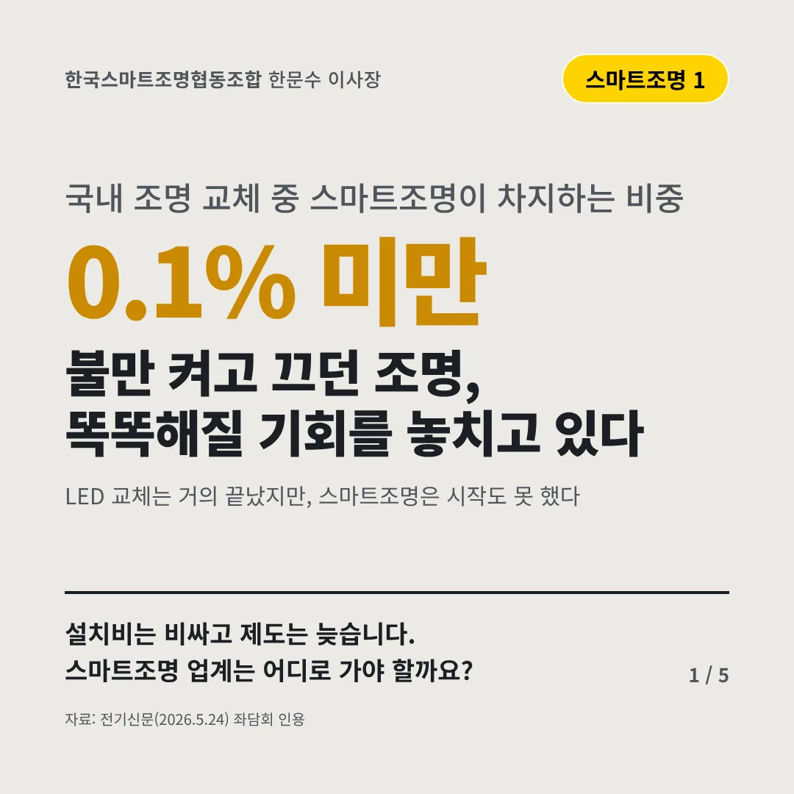
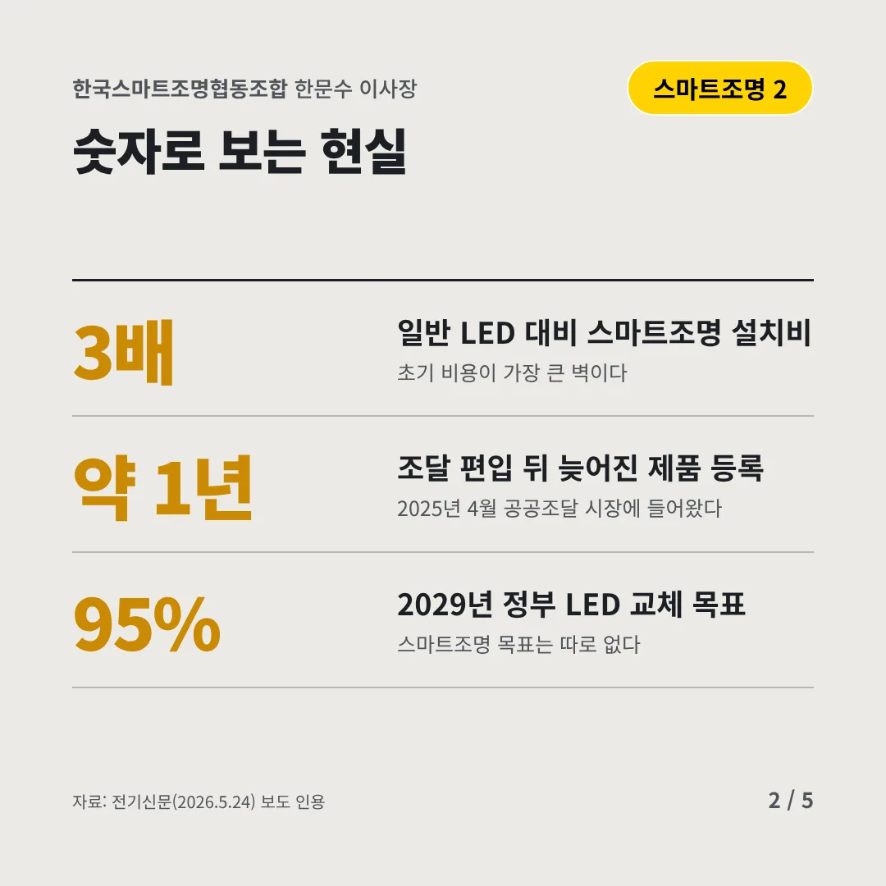
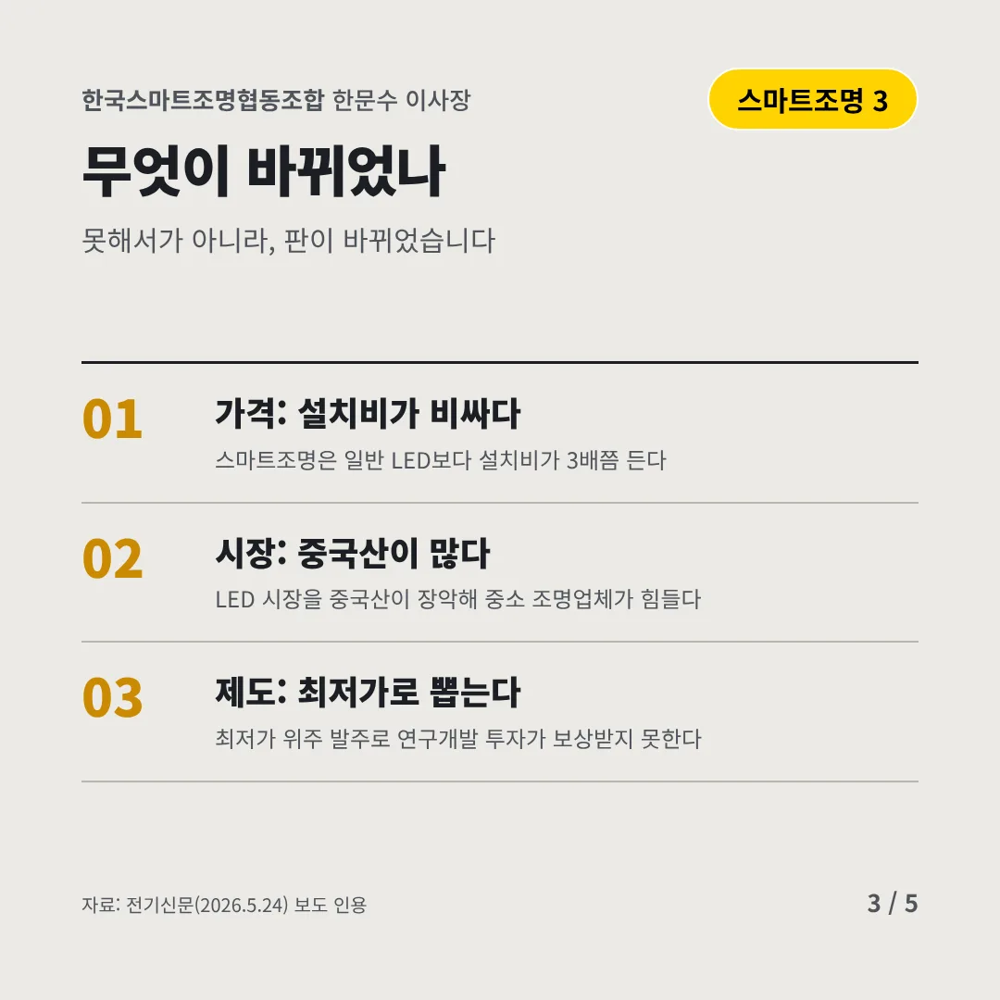
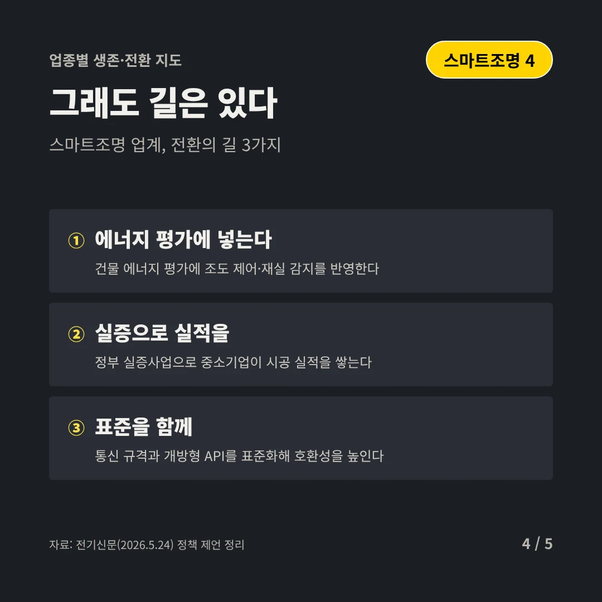
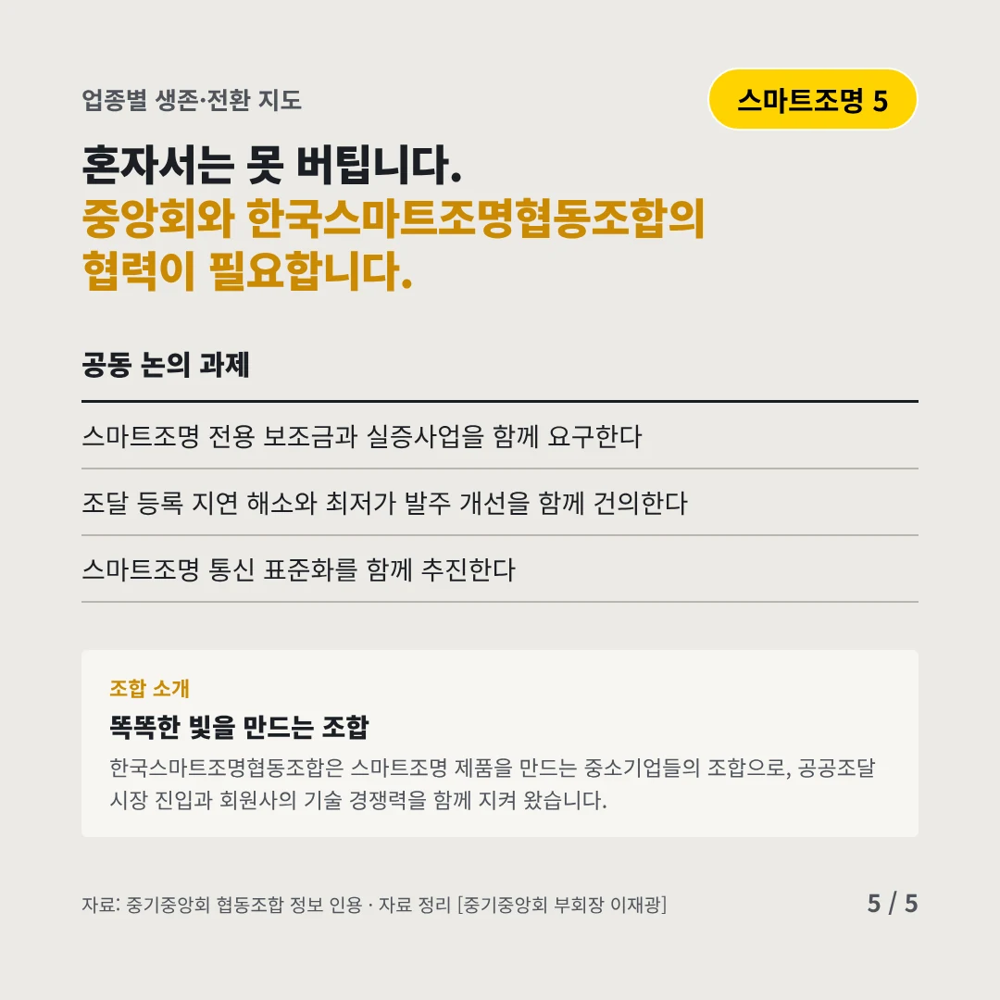
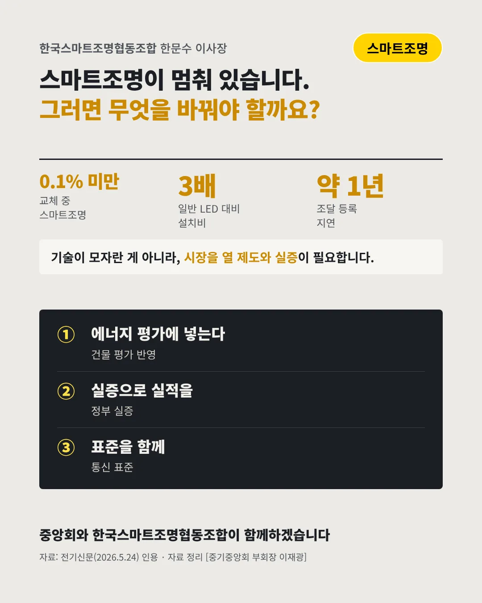

한국스마트조명협동조합한문수 이사장
불만 켜고 끄던 조명, 똑똑해질 기회를 놓치고 있다
0.1% 미만 국내 조명 교체 중 스마트조명이 차지하는 비중






설치비는 비싸고 제도는 늦습니다. 스마트조명 업계는 어디로 가야 할까요?
숫자로 보는 현실
- 3배일반 LED 대비 스마트조명 설치비초기 비용이 가장 큰 벽이다
- 약 1년조달 편입 뒤 늦어진 제품 등록2025년 4월 공공조달 시장에 들어왔다
- 95%2029년 정부 LED 교체 목표스마트조명 목표는 따로 없다
무엇이 바뀌었나
- 가격: 설치비가 비싸다스마트조명은 일반 LED보다 설치비가 3배쯤 든다
- 시장: 중국산이 많다LED 시장을 중국산이 장악해 중소 조명업체가 힘들다
- 제도: 최저가로 뽑는다최저가 위주 발주로 연구개발 투자가 보상받지 못한다
그래도 길은 있다
- 에너지 평가에 넣는다건물 에너지 평가에 조도 제어·재실 감지를 반영한다
- 실증으로 실적을정부 실증사업으로 중소기업이 시공 실적을 쌓는다
- 표준을 함께통신 규격과 개방형 API를 표준화해 호환성을 높인다
한 장 요약

조합 소개
한국스마트조명협동조합은 스마트조명 제품을 만드는 중소기업들의 조합으로, 공공조달 시장 진입과 회원사의 기술 경쟁력을 함께 지켜 왔습니다.
자료: 전기신문(2026.5.24)